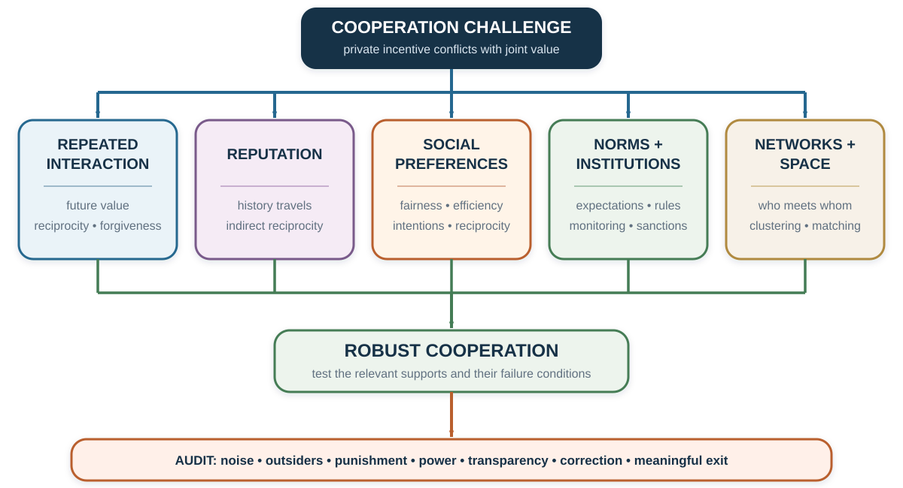
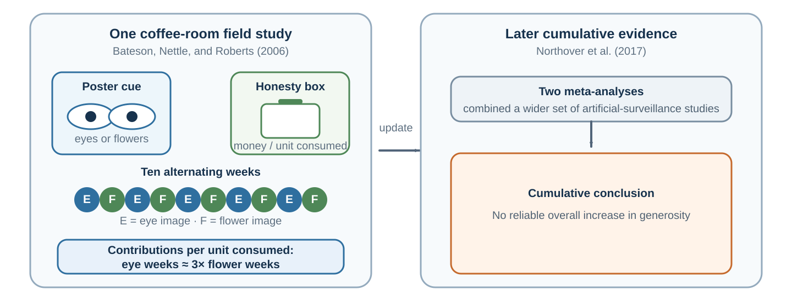

25 Cooperation and Social Preferences: Self-Interest Is Not the Only Payoff
Cooperation can survive because the future matters, because institutions change incentives, or because people value more than their own material payoff. These mechanisms look similar in the outcome and differ in what they predict.
“Cooperation is needed for evolution to construct new levels of organization.”
— Martin A. Nowak, “Five Rules for the Evolution of Cooperation”, 2006, p. 1560
Learning goals
- Diagnose cooperation through a ladder of repeated incentives, reputation and enforcement, social preferences, and norms or identity.
- Distinguish mechanisms that generate the same cooperative outcome but different responses to anonymity, noise, intentions, or exit.
- Redesign one social dilemma while auditing sanctions, outsiders, power, and the right to leave.
Opening puzzle: why cooperate when defection dominates?
Two people choose simultaneously between Cooperate and Defect. Consider this illustrative matrix:
| Player 1 Player 2 | Cooperate | Defect |
|---|---|---|
| Cooperate | 4, 4 | 0, 6 |
| Defect | 6, 0 | 2, 2 |
If Player 2 cooperates, Player 1 receives 6 by defecting instead of 4 by cooperating. If Player 2 defects, Player 1 receives 2 by defecting instead of 0 by cooperating. Defection is therefore a dominant strategy for both players, and Defect–Defect is the unique Nash equilibrium. Yet Cooperate–Cooperate gives both a higher payoff.
The matrix produces a dilemma only under its stated payoffs. If a player feels guilt, values the other person’s payoff, expects reputational consequences, or treats a promise as binding, the experienced payoff differs from the material table. If the interaction continues, the game itself differs. Before declaring behavior inconsistent with self-interest, decide which self-interest and which game are being modeled.
Is the scene really a Prisoner’s Dilemma?
Fictional interrogation and betrayal scenes are useful because their omitted details are visible. Choose one linked scene from Murder by Numbers, Numb3rs, L.A. Confidential, or The Dark Knight. Reconstruct each player’s actions and payoff ranking. Check whether Defect truly dominates, whether choices are simultaneous, whether communication changes beliefs, and whether a future relationship remains. The clips are copyrighted illustrations, not empirical evidence; no frames are reproduced here.

The mechanism ladder: same outcome, different cause
| Setting | What changes? | Why cooperation may appear | Main boundary |
|---|---|---|---|
| One-shot material-payoff game | No future strategic consequence. | Social preferences, norms, mistakes, communication, or beliefs about the game. | A cooperative action does not identify which motive operated. |
| Repeated game | Current behavior changes future play. | Direct reciprocity, threats, forgiveness, relationship value. | Requires sufficient continuation, monitoring, and credible response. |
| Reputation system | Others observe or learn one’s history. | Indirect reciprocity and future access. | Records may be noisy, manipulable, or impossible to escape. |
| Institution | Rules change payoffs, information, or enforcement. | Contracts, sanctions, matching, insurance, or dispute resolution. | Enforcement can be costly, unequal, or crowd out meaning. |
| Evolutionary or learning process | Successful strategies become more frequent. | Selection, imitation, reproduction, mutation, or local clustering. | Prevalence is not conscious intention or moral approval. |
This separation prevents a common error. Observing stable cooperation over time does not prove that people have altruistic preferences. Observing cooperation in a one-shot anonymous game does not prove pure altruism either. The action is a starting point for mechanism diagnosis.
Movement 1: why cooperation persists
Repetition gives current behavior a future
In an indefinitely repeated Prisoner’s Dilemma, today’s defection can change tomorrow’s response. Let \(T\) be the temptation payoff from defecting against a cooperator, \(R\) the reward from mutual cooperation, and \(P\) the payoff from mutual defection. Let \(\delta\) be the continuation weight.
Under a grim-trigger strategy, continued cooperation yields
\[ \frac{R}{1-\delta}. \]
A one-time deviation followed by permanent punishment yields
\[ T+\frac{\delta P}{1-\delta}. \]
Cooperation is sustainable under this comparison when
\[ \frac{R}{1-\delta}\geq T+\frac{\delta P}{1-\delta}, \]
or
\[ \delta\geq\frac{T-R}{T-P}. \]
With \(T=6\), \(R=4\), and \(P=2\), the threshold is \(\delta\geq0.5\).
This condition is not a universal cooperation rate. It belongs to a specific strategy, payoff matrix, monitoring environment, and continuation structure. If actions are misobserved, punishment can start after an innocent error. If the end date is known, backward induction can unravel cooperation under narrow assumptions. If relationships can be renewed, rematched, or reputationally connected, the effective future may remain.
Tit-for-tat, forgiveness, and noise
Tit-for-tat begins by cooperating and then copies the partner’s previous move. Axelrod’s tournaments made four properties memorable: be nice, be provocable, be forgiving, and be clear (Axelrod, 1984). These properties help explain tournament success; they are not a theorem that tit-for-tat is always optimal.
Implementation error can lock two tit-for-tat players into retaliatory cycles. Generous tit-for-tat sometimes forgives defection; win-stay, lose-shift repeats an action after satisfactory outcomes and switches after unsatisfactory ones. As the previous chapter explains, Imhof, Fudenberg, and Nowak (2007) find win-stay, lose-shift rather than tit-for-tat selected above a cooperation-benefit threshold in their particular finite-population evolutionary process. Strategy success is conditional on noise, population process, and the alternatives present.
The “live-and-let-live” system that emerged in parts of the Western Front during the First World War is a powerful historical illustration of reciprocal restraint: units facing one another repeatedly could respond to local restraint and punish violations (Axelrod, 1984). It is not a controlled test of tit-for-tat. Command structures, shared routines, geography, survival, communication, and selection all changed together.
Reputation, networks, and institutions change incentives
Nowak (2006) organizes cooperation mechanisms into five rules. The taxonomy is useful when treated as a map, not an exhaustive causal verdict.
| Rule | Link that supports cooperation | Diagnostic question |
|---|---|---|
| Kin selection | Help benefits genetically related recipients. | Is relatedness part of the actual transmission process? |
| Direct reciprocity | The same parties meet again. | Is continuation likely enough, and can actions be observed? |
| Indirect reciprocity | Reputation affects treatment by others. | Who observes, records, corrects, and can escape the record? |
| Network reciprocity | Cooperators interact disproportionately with cooperators. | How are links formed, broken, and inherited? |
| Group or multilevel selection | Groups with more cooperation differentially persist or grow. | What competes at each level, and how much movement occurs across groups? |
The evolutionary label must not erase institutions. Kin, repeated contact, reputation, and networks can matter in human settings, but laws, organizations, language, and deliberate design also determine who interacts and which outcomes reproduce.
Can an image of eyes create reputation?
A university coffee-room study makes the distinction between material and perceived consequences vivid. Bateson, Nettle, and Roberts (2006) alternated eye and flower images above a price list beside an honesty box for ten weeks. Contributions per unit consumed were nearly three times higher in the eye-image weeks. No additional observer had been introduced, but the cue may have made possible observation or reputation more salient.
That interpretation is a hypothesis, not a universal lever. The study alternated weeks in one field setting rather than randomly assigning individuals, and it measured contributions rather than an enduring honesty trait. More importantly, two later meta-analyses found no reliable overall increase in generosity from artificial surveillance cues (Northover et al., 2017). The cumulative evidence therefore does not support “add eyes and people become honest.” It supports a narrower diagnostic question: when does a cue alter perceived observability, for whom, and with what consequence? Appendix E uses this case to show how a memorable result should be revised as evidence accumulates.

Applied case: large stakes do not remove context
The television game Golden Balls ended with contestants choosing Split or Steal for large and widely varying prizes. Before reading the evidence, watch one Split-or-Steal round and an unusual communication strategy. Record promises, threats, commitments, and the options that remain credible. The linked clips are selected cases, not estimates of average behavior.
Van den Assem, van Dolder, and Thaler (2012) report stakes averaging more than $20,000. Cooperation remained high relative to what a simple own-money-only model would predict. The authors find evidence consistent with reciprocal preferences from earlier interaction, little support in their sample for conditional cooperation based on an opponent’s expected action, and an age-dependent gender pattern.
The stakes were consequential, but the setting was not an anonymous one-shot Prisoner’s Dilemma: contestants selected into a televised program, interacted before choosing, and experienced the prize inside a larger show. The evidence rejects the claim that high stakes automatically eliminate cooperation. It does not identify one universal motive or transport rate.
Distributional models make motives testable
Inequality aversion
For two people, Fehr and Schmidt’s (1999) model can be written as
\[ U_i=x_i-\alpha_i\max(x_j-x_i,0)-\beta_i\max(x_i-x_j,0), \]
with the standard restrictions \(\alpha_i\geq\beta_i\) and \(0\leq\beta_i<1\). The first penalty represents disadvantageous inequality; the second represents advantageous inequality. Because disadvantageous inequality can hurt more, a responder may reject a low ultimatum offer, while a proposer may share even when rejection is impossible.
The model is descriptive and falsifiable. It is not a claim that inequality is the only concern. Bolton and Ockenfels’s (2000) ERC model emphasizes one’s relative share, while Charness and Rabin (2002) allow concerns for total surplus, the worst-off person, and reciprocity. Efficiency and equality can conflict: giving an extra euro to the better-off person may create several euros of total benefit, while equalization may reduce the sum.
Revealed preference over allocations
Andreoni and Miller (2002) gave 176 participants 8–11 allocation choices at varying prices of giving, producing more than 1,600 decisions. Fewer than 2% violated the generalized axiom of revealed preference in the reported classification summary, so most choices could be represented by a well-behaved utility function.
A familiar summary assigns 47.2% to a selfish type, 30.4% to an egalitarian or maximin type, and 22.4% to a utilitarian type. But only 43% fit one of the pure categories exactly; the remaining 57% were assigned to the nearest category. The percentages demonstrate structured heterogeneity. They do not show that every person possesses one pure and permanent type.
Outcomes and intentions are different
Outcome-based models ask who gets what. Reciprocity also asks why the other person acted. The same unequal allocation can be judged differently if it was freely chosen, forced by the available menu, produced by chance, or intended to help.
This creates another identification test. Hold final payoffs constant while changing the feasible alternatives or the actor’s control. If responses change, allocation alone is insufficient. Intention-based models can explain the difference, but beliefs about intention must be measured rather than inferred from punishment alone.
Cross-cultural evidence: variation is part of the theory
Henrich and colleagues (2001) conducted ultimatum, public-goods, and dictator-type experiments across 15 small-scale societies. Behavior varied substantially. In Lamalera, Indonesia, offers were often hyperfair and have been discussed in relation to the cooperative organization of whale hunting. Among the Au and Gnau in Papua New Guinea, some high offers were rejected and have been interpreted in relation to obligations created by accepting gifts.
The lesson is not that one society is cooperative and another selfish. Experimental stakes, recruitment, comprehension, market integration, production systems, kinship, and local norms move together. A cultural example should generate a mechanism hypothesis: which shared practice changes entitlements, expectations, or enforcement, and what comparison could test it?
Meta-analysis also shows that ultimatum behavior varies across settings (Oosterbeek et al., 2004). Culture is therefore not a residual label attached after a difference appears. It must be represented by measurable institutions, meanings, experiences, and expectations.
Bridge: preferences, norms, and enforcement are different
A person can dislike inequality privately even when no one else expects sharing. That is a social preference. A person can keep all the money yet believe that sharing is socially appropriate. That is a norm belief that loses against another motive. The concepts should not be merged.
| Concept | What enters the account? | How to measure it | Typical intervention |
|---|---|---|---|
| Social preference | Value placed on own and others’ outcomes, inequality, efficiency, or intentions. | Incentivized choices across payoff and intention variations. | Change allocation consequences or matching. |
| Empirical expectation | Belief about what others do. | Elicit expected behavior with clear reference group. | Provide credible descriptive information. |
| Normative expectation | Belief about what others think one should do. | Elicit perceived approval or appropriateness. | Create common expectations, legitimacy, and voice. |
| External enforcement | Reward or sanction from others or institutions. | Vary observability, punishment, or formal rule. | Monitoring, contracts, restorative processes, appeal. |
| Internal enforcement | Guilt, shame, pride, identity, or self-sanction. | Private choices plus validated self-report/process evidence. | Reflection and identity-consistent commitments, without coercion. |
Bicchieri (2006) emphasizes that social norms depend on empirical and normative expectations within a relevant group. This definition forces specificity: who is the reference group, what behavior is expected, whose approval matters, and what happens after violation?
This chapter needs that distinction because the same cooperative action can come from a preference, a belief, or enforcement. Social Norms and Conformity then takes the next step: it separates descriptive, injunctive, and dynamic norms and examines social learning, conformity, pluralistic ignorance, social proof, and information cascades.
Eliciting norms as a coordination problem
Krupka and Weber (2013) ask participants to rate how socially appropriate an action is, with payment for matching the modal rating of others. The task converts a private opinion into a coordination problem: “Which rating will people in this setting recognize as shared?”
A pedagogical representation is
\[ u(a_k)=\beta\pi(a_k)+\gamma N(a_k), \]
where \(\pi(a_k)\) is the material payoff and \(N(a_k)\) is the perceived appropriateness of action \(a_k\). This equation is an organizing device, not a uniquely estimated psychological law. The weight \(\gamma\), the reference group, and the norm score must be measured.
Dictator variants illustrate why this matters. Giving from an unearned windfall, taking from another person’s endowment, choosing whether to enter the allocation task, or selecting from a menu with a harmful alternative can yield the same final allocation with different social meaning. A model based only on final payoffs misses what the action communicates relative to the alternatives.
Punishment can enforce cooperation—and create another dilemma
People sometimes pay to punish defectors or unfair partners. Punishment can stabilize cooperation when future interactions, reputation, or internalized norms are present. It can also be antisocial, mistaken, retaliatory, or captured by powerful actors.
De Quervain and colleagues (2004) found striatal activity associated with decisions to punish a defector in a trust-game setting. The correlation is consistent with punishment having reward value for some participants. It does not prove that punishment is intrinsically pleasurable, just, or effective outside the task.
Before adding sanctions, ask:
- Can contribution and violation be observed accurately?
- Who decides that a violation occurred?
- Can the accused correct the record or appeal?
- Does punishment repair cooperation or merely impose pain?
- Can high-status members punish low-status members without reciprocal accountability?
When a fine changes the meaning of the act
Gneezy and Rustichini’s (2000) daycare study found that introducing a fine for late pickup increased lateness in the treated centers, and the effect did not simply disappear when the fine was removed. One interpretation is that the fine changed a social obligation into a priced service: “I should not impose on staff” became “I can pay to arrive late.”
The result is a warning, not a universal crowding-out rule. A fine can deter when it is large, legitimate, well enforced, and does not license the behavior. Incentives carry both a price and a meaning. Design must test both.
Fairness in markets: entitlement constrains price
Kahneman, Knetsch, and Thaler (1986) asked separate samples of respondents to judge market practices. Figure 25.4 shows four selected historical vignettes. The two car questions provide the cleaner framing contrast because the final list price is the same but its path differs. The snow-shovel and lettuce questions are not a controlled pair: the products, circumstances, price changes, and samples also differ.

Two additional vignettes preserve the broader evidence without overloading the figure: 74% rated auctioning one scarce doll to the highest bidder unfair (\(N=101\)), and 91% rated a rent increase exploiting a tenant’s location-specific dependence unfair (\(N=157\)). “Unfair” combines the two unfavorable response categories; these rows come from separate samples rather than one pooled survey.
The contrast suggests that people protect reference transactions and accepted entitlements while allowing some cost-based adjustments. Exact wording, year, population, and market institution matter. The percentages should not be treated as current legal standards or universal moral shares.
For managers, the lesson is not “never raise price.” Explain the changed cost or scarcity, preserve procedural consistency, avoid exploiting a trapped party, and consider rationing rules that remain defensible if customers understand them.
Application: build cooperation around the diagnosed failure
Suppose members of a project team withhold information.
- Map material incentives. Does sharing help the project but reduce individual credit or bargaining power?
- Measure beliefs. Do members expect others to share? Do they expect sharing to be valued?
- Check repetition and reputation. Will contributors meet again, and is the record accurate?
- Test social preferences. Do people sacrifice to help the team when strategic consequences are removed?
- Elicit the norm. What do members believe a responsible colleague should disclose, and when?
- Change the institution. Align credit, create reciprocal access, document contributions, provide a safe correction process, and protect sensitive information.
- Audit boundaries. Could “sharing” expose a vulnerable person, violate consent, or become compulsory surveillance?
Do not begin with a team-building slogan if the payoff system rewards hoarding. Do not begin with punishment if the behavior is unobservable or the norm is contested. Match the lever to the mechanism.
Ethics: cooperation for whom?
Cooperation is not automatically good.
- A cartel is cooperation among sellers against buyers.
- Silence can be cooperation with a harmful organizational norm.
- Strong in-group reciprocity can finance exclusion of outsiders.
- Reputation can sustain trust or create an unerasable social score.
- Punishment can protect a commons or suppress dissent.
- Commitment can stabilize a relationship or trap someone who needs to leave.
The ethical test asks whether affected people understand the rule, whose objective it serves, how evidence is corrected, whether sanctions are proportionate, and whether refusal or exit remains meaningful.
Practice Lab
Play one anonymous Prisoner’s Dilemma round, then four announced rounds with the same partner. Record actions, beliefs, expected continuation, perceived intentions, and stated norms separately after each round. Produce a mechanism ladder explaining the path through (1) repetition, (2) reputation or enforcement, (3) social preference, and (4) norm or identity. Add one treatment that distinguishes two adjacent rungs.
Take it forward
- Use this when a team, market, or community creates joint value yet gives each actor a reason to free ride or defect.
- Do not infer altruism, selfishness, fairness, or norm compliance from cooperation or defection alone.
- Try this next by locating the failure on the mechanism ladder and changing the narrowest rule that addresses it.
Cooperation shows how other people enter value: their actions change what an outcome is worth. Social learning adds a second route. Other people’s actions also enter evidence, informing us about what may be true, what others do, and what they appear to approve.
References cited in this chapter
Andreoni, J., & Miller, J. (2002). Giving according to GARP: An experimental test of the consistency of preferences for altruism. Econometrica, 70(2), 737–753. https://doi.org/10.1111/1468-0262.00302
Axelrod, R. (1984). The evolution of cooperation. Basic Books.
Bateson, M., Nettle, D., & Roberts, G. (2006). Cues of being watched enhance cooperation in a real-world setting. Biology Letters, 2(3), 412–414. https://doi.org/10.1098/rsbl.2006.0509
Bicchieri, C. (2006). The grammar of society: The nature and dynamics of social norms. Cambridge University Press.
Bolton, G. E., & Ockenfels, A. (2000). ERC: A theory of equity, reciprocity, and competition. American Economic Review, 90(1), 166–193. https://doi.org/10.1257/aer.90.1.166
Brosnan, S. F., & de Waal, F. B. M. (2003). Monkeys reject unequal pay. Nature, 425, 297–299. https://doi.org/10.1038/nature01963
Camerer, C. F. (2003). Behavioral game theory: Experiments in strategic interaction. Princeton University Press.
Charness, G., & Rabin, M. (2002). Understanding social preferences with simple tests. Quarterly Journal of Economics, 117(3), 817–869. https://doi.org/10.1162/003355302760193904
Chen, Y., & Li, S. X. (2009). Group identity and social preferences. American Economic Review, 99(1), 431–457. https://doi.org/10.1257/aer.99.1.431
Dal Bó, P., & Fréchette, G. R. (2018). On the determinants of cooperation in infinitely repeated games: A survey. Journal of Economic Literature, 56(1), 60–114. https://doi.org/10.1257/jel.20160980
de Quervain, D. J.-F., Fischbacher, U., Treyer, V., Schellhammer, M., Schnyder, U., Buck, A., & Fehr, E. (2004). The neural basis of altruistic punishment. Science, 305(5688), 1254–1258. https://doi.org/10.1126/science.1100735
Fehr, E., & Schmidt, K. M. (1999). A theory of fairness, competition, and cooperation. Quarterly Journal of Economics, 114(3), 817–868. https://doi.org/10.1162/003355399556151
Forsythe, R., Horowitz, J. L., Savin, N. E., & Sefton, M. (1994). Fairness in simple bargaining experiments. Games and Economic Behavior, 6(3), 347–369. https://doi.org/10.1006/game.1994.1021
Gneezy, U., & Rustichini, A. (2000). A fine is a price. Journal of Legal Studies, 29(1), 1–17. https://doi.org/10.1086/468061
Henrich, J., Boyd, R., Bowles, S., Camerer, C., Fehr, E., Gintis, H., & McElreath, R. (2001). In search of Homo economicus: Behavioral experiments in 15 small-scale societies. American Economic Review, 91(2), 73–78. https://doi.org/10.1257/aer.91.2.73
Hoffman, E., McCabe, K., Shachat, K., & Smith, V. (1994). Preferences, property rights, and anonymity in bargaining games. Games and Economic Behavior, 7(3), 346–380. https://doi.org/10.1006/game.1994.1056
Hsu, M., Anen, C., & Quartz, S. R. (2008). The right and the good: Distributive justice and neural encoding of equity and efficiency. Science, 320(5879), 1092–1095. https://doi.org/10.1126/science.1153651
Imhof, L. A., Fudenberg, D., & Nowak, M. A. (2007). Tit-for-tat or win-stay, lose-shift? Journal of Theoretical Biology, 247(3), 574–580. https://doi.org/10.1016/j.jtbi.2007.03.027
Kahneman, D., Knetsch, J. L., & Thaler, R. H. (1986). Fairness as a constraint on profit seeking: Entitlements in the market. American Economic Review, 76(4), 728–741.
Krupka, E. L., & Weber, R. A. (2013). Identifying social norms using coordination games: Why does dictator game sharing vary? Journal of the European Economic Association, 11(3), 495–524. https://doi.org/10.1111/jeea.12006
Nowak, M. A. (2006). Five rules for the evolution of cooperation. Science, 314(5805), 1560–1563. https://doi.org/10.1126/science.1133755
Northover, S. B., Pedersen, W. C., Cohen, A. B., & Andrews, P. W. (2017). Artificial surveillance cues do not increase generosity: Two meta-analyses. Evolution and Human Behavior, 38(1), 144–153. https://doi.org/10.1016/j.evolhumbehav.2016.07.001
Oosterbeek, H., Sloof, R., & van de Kuilen, G. (2004). Cultural differences in ultimatum game experiments: Evidence from a meta-analysis. Experimental Economics, 7, 171–188. https://doi.org/10.1023/B:EXEC.0000026978.14316.74
Tajfel, H. (1970). Experiments in intergroup discrimination. Scientific American, 223(5), 96–102. https://doi.org/10.1038/scientificamerican1170-96
Tricomi, E., Rangel, A., Camerer, C. F., & O’Doherty, J. P. (2010). Neural evidence for inequality-averse social preferences. Nature, 463, 1089–1091. https://doi.org/10.1038/nature08785
van den Assem, M. J., van Dolder, D., & Thaler, R. H. (2012). Split or steal? Cooperative behavior when the stakes are large. Management Science, 58(1), 2–20. https://doi.org/10.1287/mnsc.1110.1413